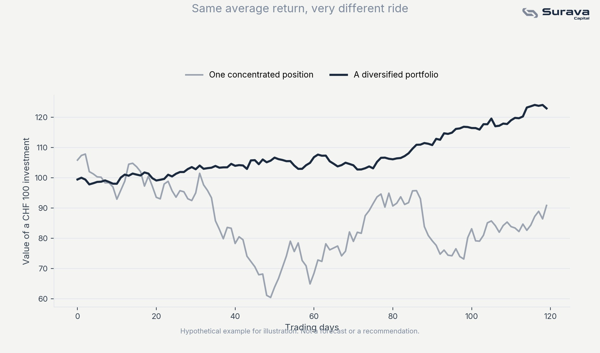

What diversification actually does
Diversification means holding many different investments instead of concentrating in one or a few. The reason it reduces risk isn't magic, it's arithmetic. When you hold one stock, your entire outcome depends on that one company's fortune. When you hold hundreds, spread across industries and countries, no single company's bad year can sink your entire portfolio.
Critically, diversification does not reduce your expected return in any meaningful way if done correctly. You're not sacrificing upside for safety, you're removing risk that wasn't being rewarded in the first place.

Why concentration risk isn't rewarded
Financial theory draws a distinction between two kinds of risk. Market risk is the risk that markets as a whole go up or down, and you get compensated for taking it over time through expected returns. Concentration risk, the risk that comes specifically from betting heavily on one company or sector, is not compensated. The market doesn't pay you extra for being undiversified, it just makes your ride bumpier without a corresponding reward.
The common ways people get it wrong
Diversification isn't just "own more than one thing." A few frequent mistakes undercut it entirely:
Owning many funds that hold the same stocks. Five different funds can look diversified on paper while all being dominated by the same handful of large companies underneath.
Home bias. Concentrating heavily in Swiss companies because they're familiar, when Switzerland is a small fraction of the global economy.
Confusing number of holdings with actual diversification. Twenty tech stocks are not diversified, they're twenty bets on the same underlying trend.
This article is for general educational and informational purposes only. It is not investment, tax, or legal advice, or an offer of any regulated financial service. Views expressed are those of Surava Capital.